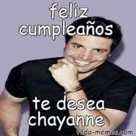

¡Buenas mañañas/tardezonas/nochezonas, Ximenin! no importa cuando estés checando este sitio web que hice con mucho cariño y amor para celebrar tu día de cumpleaños, lo importante es que hace 16 años naciste junto con todas las flores, en la pila del bautismo cantaron todos los ruiseñores y ya viene amaneciend... (se ponía a cantar las mañanitas, ¿viste?). Pero bueno, espero que te la estés pasando muy bien en tu día, o te lo hayas pasado muy bien y tambié que me hayas guardado un poco de pastel y comida de los Generales que está muy deliciosa, y si no es así, me voy a poner violento DIGO, sería una pena (aunque esté en tu estómago, no me enojo). Pero bueno, abarcando el súper regalo que ahora mismo estás apreciando, esta página web consiste de dos vídeos de unos regalitos que te tengo preparados, los cuáles lastimosamente solo te los puedo mostrar de esta forma, pero es lo de menos, ya que la intención es lo que cuenta, ¿no? Y ya no te entretengo más, espero que te lo estés pasando increíble en este día (o lo hayas pasado de maravilla) y ¡Feliz cumpleaños y día del santo, señora Guadalupe, no se nos vaya a desbaratar hoy!